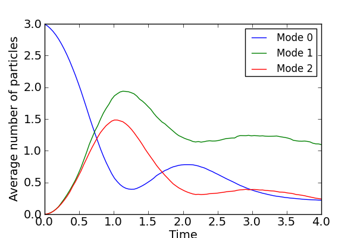

Monte-Carlo evolution of the trilinear Hamiltonian subject to damping¶
Monte-Carlo evolution of the trilinear Hamiltonian subject to damping.
from qutip import *
from pylab import *
import time
#number of states for each mode
N0=9
N1=9
N2=9
#damping rates
gamma0=0.1
gamma1=0.1
gamma2=0.4
alpha=sqrt(3)#initial coherent state param for mode 0
tlist=linspace(0.0,4,100)
ntraj=500#number of trajectories
#define operators
a0=tensor(destroy(N0),qeye(N1),qeye(N2))
a1=tensor(qeye(N0),destroy(N1),qeye(N2))
a2=tensor(qeye(N0),qeye(N1),destroy(N2))
#number operators for each mode
num0=a0.dag()*a0
num1=a1.dag()*a1
num2=a2.dag()*a2
#dissipative operators for zero-temp. baths
C0=sqrt(2.0*gamma0)*a0
C1=sqrt(2.0*gamma1)*a1
C2=sqrt(2.0*gamma2)*a2
#initial state: coherent mode 0 & vacuum for modes #1 & #2
vacuum=tensor(basis(N0,0),basis(N1,0),basis(N2,0))
D=(alpha*a0.dag()-conj(alpha)*a0).expm()
psi0=D*vacuum
#trilinear Hamiltonian
H=1j*(a0*a1.dag()*a2.dag()-a0.dag()*a1*a2)
#run Monte-Carlo
start_time=time.time()
avg=mcsolve(H,psi0,tlist,ntraj,[C0,C1,C2],[num0,num1,num2])
finish_time=time.time()
print 'time elapsed = ',finish_time-start_time
#plot expectation value for photon number in each mode
fig = figure(figsize=(6, 4))
plot(tlist,avg[0],tlist,avg[1],tlist,avg[2])
xlabel("Time")
ylabel("Average number of particles")
legend(('Mode 0', 'Mode 1','Mode 2'))
savefig('examples-trilinearmonte.png')
close(fig)
